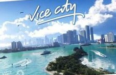
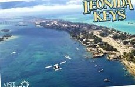
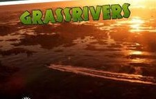
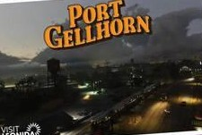
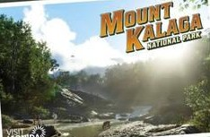

🗺️ Explora Leonida
Muévete, haz zoom y pincha en cualquier punto: este mapa reúne todos los lugares vistos en tráilers y capturas.
Lo básico: fecha, precio y ediciones
Después de dos retrasos (iba a salir en 2025 y luego el 26 de mayo de 2026), Rockstar fijó el lanzamiento para el 19 de noviembre de 2026. Las reservas se abrieron el 25 de junio, y quien lo compre en digital podrá precargarlo desde el 10 de noviembre (a las 00:00 en PS5 y a la 1:00 en Xbox, hora peninsular) para jugar en cuanto se desbloquee, a medianoche del 19. Y ya está aquí: GTA VI salió a la venta el 19 de noviembre a las 00:00, hora local (Nueva Zelanda fue el primer país en jugarlo). El 9 de noviembre, Take-Two confirmó que Rockstar ha terminado el desarrollo del juego, así que, salvo sorpresa, no habrá más retrasos.
🏆 Candidato a todo: el 17 de noviembre, antes de salir, GTA VI se convirtió en el juego con más nominaciones de The Game Awards 2026: 8, entre ellas Juego del Año (contra 007 First Light, Control Resonant, Phantom Blade Zero, Resident Evil Requiem y The Legend of Zelda: Ocarina of Time), mejor dirección, mejor narrativa, mejor dirección artística, mejor banda sonora y música, mejor diseño de sonido, mejor interpretación (por Lucía) y mejor acción y aventura. La gala es el 10 de diciembre en Los Ángeles.
📈 Estreno de récord (cifra oficial): según Rockstar y Take-Two, GTA VI vendió 32,5 millones de copias en PS5 y Xbox Series y facturó 3.790 millones de dólares hasta el cierre del 19 de noviembre, reservas incluidas: el mayor estreno de la historia del entretenimiento, en cualquier formato. Como referencia, GTA V hizo 800 millones de dólares en sus primeras 24 horas en 2013 y Red Dead Redemption 2, 725 millones en su primer fin de semana. Las estimaciones previas de Sensor Tower (24,6 millones) se quedaron cortas. Leer la noticia ›
| Edición | Precio | Qué trae |
|---|---|---|
| Estándar | 79,99 € (79,99 $) | El juego completo. |
| Ultimate Edition | 99,99 $ | El juego y una colección de extras ligados a la historia de Jason y Lucía: coches, armas, ropa y otros objetos. |
Regalo por reservar: todas las reservas y las compras hechas antes del 20 de noviembre incluyen el Vintage Vice City Pack, con objetos que recuerdan a la Vice City de los 80. Las reservas digitales suman además un mes de GTA+.
Ojo con la caja: la versión física no lleva disco, sino un código de descarga. Las cajas se recogen en tienda desde el 12 de noviembre y también sirven para precargar. Si la compras, asegúrate de tener espacio libre en la consola.
🎮 Reservar para PS5 🎮 Reservar para Xbox
Enlaces de afiliado: si compras desde aquí, Trollacos se lleva una pequeña comisión y a ti no te cuesta nada más.
Últimas novedades (actualizado el 25 de noviembre)
- 25 nov · Cierran el «GTA VI para PC» no oficial. El Discord de Project Leonida (casi 180.000 miembros), que intentaba hacer funcionar en ordenador la versión filtrada de Xbox, desaparece tras un aviso de copyright y sus responsables lo dejan. Solo habían conseguido una pantalla en negro. Rockstar no ha dicho nada y la versión oficial de PC sigue sin anunciar. Lo tienes en idiomas, PS5 Pro y PC. Leer la noticia ›
- 24 nov · Primer parche con notas: la 1.002.002. Llega a PS5 (unos 604 MB) y Xbox Series (unos 1,6 GB) y, por fin, Rockstar dice qué arregla: llamadas de teléfono que no saltaban (algunas hacían falta para avanzar la historia), el guardado automático, varios cuelgues, el tiempo que no cambiaba y un nivel de búsqueda imposible de quitar. Lo tienes en qué necesitas para jugarlo. Leer la noticia ›
- 23 nov · The Album, récord en Spotify. GTA VI: The Album (34 canciones, con Atlantic Records) está en streaming desde el 20 de noviembre. Según las cifras que recogen varios medios, sumó unos 29,85 millones de reproducciones el primer día, el mejor estreno de una banda sonora en Spotify (sin confirmación oficial), y «Flower in a Hurricane» entró en el n.º 1 mundial. El sábado, festival en Miami con Cardi B y Travis Scott. Lo tienes en la música. Leer la noticia ›
- 22 nov · El «Florida Joker» sale en el juego. Lawrence Sullivan, el hombre que decía que Rockstar se había inspirado en él para el tipo de pelo morado del Tráiler 1, aparece en los créditos dentro de «The Local Population» y asegura que pone voz a su doble, que sale en un vídeo de Snapmatic. Rockstar no ha dicho nada más. Lo tienes en los personajes. Leer la noticia ›
- 21 nov · Ya es oficial: 32,5 millones de copias. Rockstar y Take-Two ponen cifra al estreno: 32,5 millones de copias y 3.790 millones de dólares hasta el cierre del 19 de noviembre, reservas incluidas. Es el mayor estreno de la historia del entretenimiento y casi cinco veces lo que hizo GTA V (800 millones). Lo tienes en lo básico. Leer la noticia ›
- 20 nov · Estreno de récord (según las estimaciones). Sensor Tower calcula que GTA VI vendió unos 24,6 millones de copias y facturó unos 2.360 millones de dólares el primer día, reservas incluidas (lo recogen Reuters, CNBC y TweakTown). Take-Two aún no ha dado cifra oficial. En directo, 7,91 millones de espectadores a la vez, récord según Streams Charts. Lo tienes en lo básico. Leer la noticia ›
- 19 nov · ¡GTA VI ya está a la venta! Se desbloquea a las 00:00, hora local, en PS5 y Xbox Series X|S (Nueva Zelanda fue la primera; en la nube, desde las 7:00). Antes llegó otra actualización, la 1.002.001: unos 602 MB en PS5 y 1,6 GB en Xbox, otra vez sin notas de Rockstar. PC, sin fecha. Lo tienes en qué necesitas para jugarlo. Leer la noticia ›
- 24 nov · Trucos y sistemas de GTA VI. Nueva página con el perfil criminal, las estrellas de la policía, los coches más rápidos, WAiNK, BuckMe, cómo atracar una tienda, los rastreadores, la relación de Jason y Lucía, jugar sin matar y las mejores armas. Ver los trucos ›
- 19 nov · Mapa oficial de Leonida. Con el lanzamiento, Rockstar publica el mapa completo de Leonida para descargar e imprimir. Lo tienes en la guía con un índice de lugares y nuestro póster en neón. Ver el mapa ›
- 18 nov · 99 en Metacritic. Salen los análisis y GTA VI empata con Zelda: Ocarina of Time como el juego mejor valorado de la historia: 99 de media con 146 críticas y otro 99 en OpenCritic, con un 10 en IGN, GameSpot y Vandal. Lo tienes en preguntas rápidas. Leer la noticia ›
- 18 nov · PS5: actualización obligatoria 14.23. PlayStation lo confirma oficialmente: sin la versión 14.23 del software del sistema (unos 1,3 GB) no se puede jugar a GTA VI. Instálala antes de las 00:00 del 19. Sony solo habla de «correcciones de seguridad». Lo tienes en qué necesitas para jugarlo. Leer la noticia ›
- 17 nov · 8 nominaciones en The Game Awards. GTA VI es el juego con más candidaturas de 2026, entre ellas Juego del Año, mejor narrativa, mejor música y mejor interpretación (por Lucía). La gala, el 10 de diciembre en Los Ángeles. Lo tienes en lo básico. Leer la noticia ›
- 15 nov · Rockstar North abre la puerta. The Guardian juega una demo guiada en Edimburgo: los golpes se preparan (cámaras, puertas traseras, combinación de la caja fuerte, incluso sin amenazar a nadie), Jason y Lucía tienen citas y su relación «es tuya para cuidarla o para perderla», hay 62 tipos de aves para apuntar con prismáticos y, según Rob Nelson, es el primer GTA que fomenta la empatía. Lo tienes en jugabilidad. Leer la noticia ›
- 13 nov · Primera actualización, antes de salir. A quien tiene la precarga le ha llegado la 1.002.000: unos 1,07 GB en PS5 y 2,2 GB en Xbox Series. Rockstar no ha publicado notas ni ha dicho qué cambia. Déjala descargada antes del 19. Lo tienes en qué necesitas para jugarlo. Leer la noticia ›
- 13 nov · «Macca & Friends», los dibujos de la tele del juego. Sale el primer teaser de una serie de animación dentro de GTA VI: Macca, un caimán, y su pandilla del pantano. Se estrena el 19 en Weazel, la cadena del juego. Lo difundió DiscussingFilm; Rockstar no la ha comentado. Lo tienes en jugabilidad. Leer la noticia ›
- 12 nov · GTA VI en Xbox: récord de reservas y nube desde las 7:00. Xbox confirma que es lo más reservado de la historia de la Microsoft Store (sin cifras). Por Xbox Cloud Gaming se juega desde las 7:00 del 19 de noviembre (hora peninsular), también en Xbox One, y Xbox y Take-Two anuncian una alianza de 10 años. Lo tienes en versiones. Leer la noticia ›
- 10 nov · Tráiler de funciones de PS5 y datos técnicos oficiales. PlayStation enseña lo que aprovecha el juego (DualSense, Tempest 3D Audio, cargas rápidas) y Rockstar confirma por escrito que apunta a 30 fps en consola. La PS5 Pro suma PSSR y sombras con trazado de rayos (solo en Pro). También llega a Xbox Cloud Gaming, incluso en Xbox One. Lo tienes en versiones y el vídeo en los tráilers. Leer la noticia ›
- 10 nov · Nuevo vídeo: «Pre-Load Now». Rockstar celebra la precarga con un anuncio de 30 segundos con escenas de Vice City que acaba con la fecha: 19 de noviembre. No es un tráiler 3, pero ya lo tienes con los demás en los tráilers. Leer la noticia ›
- 10 nov · GTA VI está terminado. En los resultados de Take-Two del 9 de noviembre, Strauss Zelnick confirmó que Rockstar ha acabado el desarrollo y que el 19 de noviembre sigue en pie. Las reservas van «muy por encima» de lo previsto, aunque no han dado cifras. Y la precarga ya ha empezado. Lo tienes en lo básico. Leer la noticia ›
- 10 nov · Festival de GTA VI en Miami. Rockstar y PlayStation celebran el lanzamiento con «Grand Theft Auto VI: The Festival» el 21 de noviembre en Mana Wynwood: Travis Scott, Cardi B, Justice, Metro Boomin, Tainy y más. Entradas solo por sorteo (se cierra el 10 a las 22:00, hora peninsular) y a partir de 17 años. Lo tienes en la música. Leer la noticia ›
- 3 nov · La precarga se adelanta al 10 de noviembre. Rockstar lo confirma: en PS5 empieza a las 00:00 del día 10 y en Xbox a la 1:00 (hora peninsular). Harán falta hasta 212 GB. Las cajas (con código, sin disco) se recogen desde el 12, y el 19 Rockstar regala un póster imprimible y un mapa digital de Leonida. También ha publicado una imagen nueva del skyline de Vice City, con noria, estadio y osos hinchables gigantes. Lo tienes en qué necesitas para jugarlo. Leer la noticia ›
- 3 nov · Toca actualizar la PS5. La ficha de la PlayStation Store ya pide como mínimo el software del sistema 14.22 para jugar (a principios de octubre pedía la 14.10). Lo ha destapado PlayStation Game Size; Sony y Rockstar no lo han anunciado y todo apunta a la lucha contra la piratería. Lo tienes en qué necesitas para jugarlo. Leer la noticia ›
- 2 nov · Adiós al arsenal en el bolsillo. Rob Nelson (Rockstar North) lo explicó en una entrevista: siempre llevas dos pistolas escondidas, pero armas largas como mucho dos y a la vista (una a la espalda y otra en la mano). Si vas con un arma en la mano, la gente se aparta. Lo tienes en jugabilidad. Leer la noticia ›
- 31 oct · 30 fps en consola, de momento. Según lo que contó Rob Nelson (Rockstar North) a un youtuber de visita en el estudio, GTA VI va a 30 fps en PS5 y Xbox Series. Un modo a 60 fps está por decidir, también en PS5 Pro. Lo tienes en versiones. Leer la noticia ›
- 29 oct · La banda sonora de Justice. Rockstar confirma la banda sonora original: 50 temas de Justice que llegan a streaming el 11 de diciembre. Ya puedes escuchar el nuevo single, «Pusher», con Gesaffelstein. Lo tienes en la página de música. Leer la noticia ›
- 29 oct · Gameplay nuevo… en South Park. El episodio Guinea Pig on a Stick emitió imágenes reales del juego: Jason en una playa de Vice City abarrotada tirándole caca de perro a la gente 💩, con los peatones reaccionando y las huellas marcándose en la arena. Los créditos lo confirman: "Grand Theft Auto VI footage courtesy of Rockstar Games". Rockstar marketing nivel dios. Leer la noticia ›
- 29 oct · Especial de Edge Magazine. 16 páginas desde el estudio de Rockstar en Edimburgo, más de diez capturas nuevas (Lucía en un club de neón, Jason y Lucía en moto, un tiburón martillo, el skyline de Vice City…) y un montón de detalles de su jugabilidad. Te lo contamos todo en jugabilidad. Leer la noticia ›
- 27 oct · Ocupa unos 210 GB en PS5. Lo destapó PlayStation Game Size a partir de la ficha de la PlayStation Store (el 3 de noviembre Rockstar confirmó «hasta 212 GB»). Si vas justo de espacio, mira nuestra guía de compra. Leer la noticia ›
- 22 oct · Burger Shot y Cluckin' Bell en Miami. Las cadenas de comida del juego han aparecido en el Kaseya Center, el pabellón de los Miami Heat, dentro de la campaña de lanzamiento.
- 16 oct · Coches de GTA VI por las calles de Miami. Rockstar sacó a pasear coches tematizados, entre ellos un Lamborghini de la policía de Vice Beach.
- 15 oct · Tráiler de lanzamiento. Unos 90 segundos que Rockstar soltó sin avisar. Con él llegaron el arte oficial de Jason y Lucía, Lock and Load, y una captura nueva: un hidroavión de Brian's Boat Works sobrevolando los Grassrivers al atardecer. Lo tienes en los tráilers. Leer la noticia ›
- 13 oct · Merchandising en Wynwood Walls. El museo de arte urbano de Miami tiene ropa y artículos de GTA VI.
📰 Todas las noticias de GTA VI ›
Rumores sin confirmar: que la versión de PC llegaría a principios de 2027 y que la prensa ya tiene copias para analizarlo, con los análisis el 18 de noviembre, un día antes del estreno (lo dijo el filtrador NateTheHate). Rockstar no ha dicho nada de ninguna de estas cosas.
De qué va la historia
GTA VI vuelve a Vice City, la ciudad que Rockstar inventó a partir de Miami, y por primera vez en la saga principal hay pareja protagonista: Jason Duval y Lucía Caminos.
Los dos saben que la vida les ha repartido malas cartas. Lo que empieza como un golpe sencillo para salir adelante sale mal, y acaban metidos en una conspiración criminal que se extiende por todo el estado de Leonida. A partir de ahí solo pueden fiarse el uno del otro. Si te suena a Bonnie y Clyde en versión siglo XXI, vas bien encaminado.
Y como pasa en la vida real de Florida, todo lo que ocurre acaba en vídeos virales y redes sociales. Los tráilers ya enseñan ese mundo de móviles grabándolo todo.

El Trollaco opina: un golpe "sencillo" que sale mal. Nunca nadie en un GTA ha dicho "esto va a ser fácil" y ha acertado.
Todos los personajes confirmados
Estos son los personajes que Rockstar ha presentado oficialmente hasta ahora. Habrá muchos más cuando salga el juego.
Jason Duval
Creció rodeado de estafadores y se metió en el ejército para escapar. Ahora trabaja para traficantes de los Cayos y busca una vida tranquila... que obviamente no va a tener.
Lucía Caminos
Ha peleado por su familia toda la vida, y eso la llevó a la Penitenciaría de Leonida. Sale con las ideas claras: no volver a dejar que nadie decida por ella.
Cal Hampton
Colega de Jason y compañero de trabajo para Brian. Prefiere quedarse en casa tranquilo, cerveza en mano, antes que meterse en líos.
Brian Heder
Veterano del contrabando en los Cayos de Leonida. Le da trabajo a Jason y a Cal, y tiene muy claro quién manda.
Boobie Ike
Un tipo hecho a sí mismo con negocios de todo tipo: inmobiliarias, un club de striptease y un estudio de grabación, Only Raw Records.
Dre'Quan Priest
Dejó la calle para triunfar en la música y se mueve en la escena de Only Raw Records. Tiene olfato para el talento y ganas de hacerse un nombre.
Real Dimez (Bae-Luxe y Roxy)
Amigas de toda la vida que pasaron de los trapicheos a petarlo con temas virales en redes. Ahora buscan dar el salto de verdad.
Raúl Bautista
Ladrón de bancos con muchos años de oficio. Siempre está buscando talento nuevo dispuesto a jugársela.
> Más caras de Leonida
Además de los ocho principales, en las fichas oficiales, el vistazo extendido y el especial de Edge han ido apareciendo estos:
| Personaje | Quién es |
|---|---|
| Lori Heder | La mujer de Brian. Lleva el astillero de los Cayos y, por lo visto, a Brian también. |
| Stefanie | La trabajadora social de la cárcel: la primera voz que se oye en el Tráiler 1, la que le pregunta a Lucía por su vida. |
| Méndez | Policía de Vice City, chaleco táctico, gafas de tiro y cara de pocos amigos. Sale en el vistazo extendido y en las capturas de Edge. Huele a corrupto desde aquí. |
| Valentina | Contrata a Jason y Lucía como escoltas en el vistazo extendido. Los veteranos de GTA Online la reconocerán. |
| Yago | Exadicto reconvertido en piloto de carreras ilegales. |
| Wyman | Coleccionista y conseguidor local. Es el que te encarga coches en la Ultimate Edition. |
| DWNPLY | El rapero que está detrás del primer pelotazo de las Real Dimez. |
| El «Florida Joker» | Pelo morado y tatuajes en la cara: el del Tráiler 1. Es uno más de la población local, sale en un vídeo de Snapmatic (pelea con un imitador y acaba detenido) y en los créditos figura Lawrence Sullivan, el «Florida Joker» de internet, que dice que le pone la voz. La noticia › |
Voces: Rockstar no ha anunciado el reparto aparte de los créditos del juego (ahí sale, por ejemplo, Lawrence Sullivan en «The Local Population»). Antes del lanzamiento, Stephen Root ya aseguró que sale en el juego (se le relaciona con Brian, pero sin confirmar).

EL TROLLACO OPINA: Méndez tiene más pinta de malo que de policía. Apostamos fichas de la Porra a que nos la lía en la tercera misión.
Jugabilidad
Todo lo que se ha visto en el vistazo extendido de 26 minutos, lo que Rockstar contó a Edge y la demo que enseñó a The Guardian en Rockstar North. Ya sabemos bastante más de lo que parece:
👫 Jason y Lucía
- Puedes cambiar entre los dos casi siempre, como en GTA V, aunque en algunos tramos de la historia el juego te deja con uno solo.
- Su relación evoluciona en cuatro niveles según lo que hagáis juntos.
- Pueden atracar tiendas a medias, al más puro Bonnie y Clyde, e incluso ir de la mano.
- Se llaman y se escriben cuando están separados y tienen citas: gimnasio, bar, retiro de meditación… o atracar una licorería. La relación «es tuya para cuidarla o para perderla» (Rob Nelson).
🚔 La policía
- Vuelve el nivel de búsqueda de seis estrellas.
- Te reconocen por tu ropa, tu aspecto, el coche y con quién vas. Cambiarte de ropa o quemar el coche ayuda a despistar.
- Unidades caninas en las persecuciones y coches con localizador.
- Antes de entrar en una tienda te avisa de si hay cámaras.
- Los golpes se preparan: desactivar cámaras o llevarte las grabaciones, buscar puertas traseras y averiguar la combinación de la caja fuerte. Se puede robar sin amenazar a nadie.
😈 El perfil criminal
- Una escala que va de "Profesional" a "Irredimible" según cómo te portes.
- No se borra como las estrellas: el juego recuerda si eres de los que van liándola.
- Puedes intimidar o dejar fuera de combate en vez de matar.
🚶 La gente
- Los peatones reaccionan según su carácter, el barrio y lo que han visto.
- Si llevas el arma a la vista se ponen nerviosos. Si la tiras al suelo puedes calmar la situación.
- Nada de arsenal en el bolsillo: dos pistolas escondidas y, como mucho, dos armas largas que se ven (una a la espalda y otra en la mano). Lo demás se guarda, como en Red Dead Redemption 2.
- Puedes acariciar a los perros (pidiéndole permiso al dueño)... o regañarlos.
- Si te metes en una conversación ajena, la gente reacciona: de «¿nos conocemos?» a un insulto. Según Rob Nelson, es el primer GTA con mecanismos que fomentan la empatía, para quien quiera usarlos.
- Leonida tiene 62 tipos de aves: las miras con prismáticos y se apuntan en un cuaderno de fauna.
💪 Tu cuerpo
- Vuelve el gimnasio estilo San Andreas: entrenar cambia el físico.
- Comer mal tiene consecuencias: abusar de las patatas fritas se nota.
- El café da aguante y los batidos de proteínas, vida.
🏖️ Cosas que hacer
- Baloncesto, pesca (con Cal), kayak, moto de agua y buceo.
- Carreras de motocross y carreras ilegales de coches.
- Combates de lucha y peleas en el patio de atrás.
- Minigolf, billar, salto BASE... y tirar caca de perro a la gente (gracias, South Park).
🚗 Coches y robos
- Conducción más realista, desarrollada con pilotos de verdad.
- Para robar un coche puedes romper la ventanilla o abrirlo con una ganzúa.
- Scooter Bros te lleva tus vehículos donde estés y la app WAINK te dice qué coches buscan los peristas.
- Puedes disparar a las ruedas de la policía para escapar.
🌆 Un mundo vivo
- Más interiores que en ningún GTA: pisos, bares en azoteas, clubs subterráneos.
- Autobuses y trenes que funcionan de verdad.
- Un día y noche más largos que en GTA V y calles más estrechas y realistas.
- Radio y podcasts también a pie, con los cascos del móvil.
- Tele con programación propia: en Weazel se estrena «Macca & Friends», unos dibujos animados de un caimán y sus amigos del pantano (teaser del 13 de noviembre; Rockstar aún no ha contado cómo se verá en el juego).
EL TROLLACO OPINA: lo del gimnasio nos da miedo. Si Jason se pasa la partida comiendo en Cluckin' Bell como nosotros, va a acabar el juego rodando.
El mapa: Leonida y Vice City
El juego no se queda en la ciudad: se juega en todo el estado de Leonida, la versión de Rockstar de Florida. Estas son las seis grandes zonas presentadas (las tienes todas en el mapa interactivo del principio):
1Vice City
INSPIRADA EN MIAMILa gran ciudad: playas, rascacielos, fiesta y crimen. Rockstar la define como el lado más oscuro del lugar más soleado de Estados Unidos.

2Cayos de Leonida (Leonida Keys)
INSPIRADOS EN LOS CAYOS DE FLORIDAIslas unidas por puentes al sur del mapa. Es la zona de Jason y de Brian, entre barcos, contrabando y casas junto al mar.

3Grassrivers
INSPIRADO EN LOS EVERGLADESPantanos, manglares y caimanes. Territorio de hidrodeslizadores y de gente que prefiere que no la encuentren.

4Port Gellhorn
COSTA OESTEUn pueblo de costa venido a menos, con moteles, centros comerciales medio vacíos y un puerto con mucho movimiento.

5Ambrosia
INTERIOR DEL ESTADOEl corazón industrial junto al lago Leonida, dominado por una enorme refinería de azúcar.
6Parque Nacional Mount Kalaga
EL NORTE SALVAJEBosques, cañones y ríos en el norte. Naturaleza salvaje para cuando quieras huir de todo (o de la policía).

Postales oficiales "Visit Leonida" de Rockstar Games.
🗺️ El mapa oficial de Leonida (para descargar e imprimir)
Con el lanzamiento, Rockstar ha publicado el mapa oficial de Leonida para descargarlo e imprimirlo gratis. Ahí están los cinco condados, las ciudades, los barrios de Vice City, las autopistas y los cayos. Pulsa en el mapa para verlo a tamaño completo.

⬇️ Descargar el mapa oficial (JPG)
📍 Índice de lugares: busca un sitio y encuéntralo en el mapa (68)
La letra es la fila (A–M) y el número, la columna (1–9), igual que en los bordes del mapa oficial.
- Abismo Key isla L5
- Ambrosia ciudad E5
- Bayside barrio G7
- Belpoint ciudad H2
- Belville ciudad F7
- Bobcat Key isla I3
- Bonanza ciudad B5
- Borrachero Sound agua F2
- Breakwater Quarry lugar H4
- Buckskin Swamp lugar G5
- Capri ciudad G3
- Capri Sound agua G2
- Catalan Bay agua H8
- Catalan Key isla I7
- Corsair Key isla J7
- Crosstown barrio G7
- Crude Islands isla F2
- Dalton Island isla H8
- Downtown barrio G7
- Draper Bay agua E3
- Draper Island ciudad D3
- Emerald Springs ciudad F5
- Featherstone Islands isla B4
- Frampton Islands isla B6
- Frogswater barrio E4
- Gellhorn ciudad F4
- Gloriana Key isla I8
- Grassrivers ciudad I5
- Grayson ciudad C4
- Hamlet ciudad I6
- Hyde Island isla B6
- KELLY COUNTY condado E4
- Key Lento ciudad K6
- La Perle barrio G7
- Lake Leonida agua E6
- Leaf Links isla F8
- LEONARD COUNTY condado E7
- Leonida Bay agua J4
- Little Cuba barrio G6
- LUMMOX COUNTY condado C5
- MARIANA COUNTY condado J4
- Maroon Key isla L5
- Mile Zero Air Station lugar L3
- Millport ciudad C7
- Moreau barrio C5
- Mount Kalaga N. P. lugar C5
- Ocean Beach barrio G8
- Peacock Bay barrio I7
- Permit Keys isla L4
- PORT GELLHORN ciudad E3
- Port Vice City barrio H8
- Riquezas Keys isla K2
- Rockridge barrio G6
- Sandbars isla F2
- Shoeless Keys isla J6
- Southside barrio I6
- Southwind ciudad L3
- Stockyard barrio F7
- Tequesta barrio H7
- VCIA · Aeropuerto lugar H6
- VICE BEACH ciudad G8
- VICE CITY ciudad G7
- VICE-DALE COUNTY condado H7
- Vinewood Beach barrio E8
- Waning Sands ciudad E7
- Washington Beach barrio F9
- Watson Bay ciudad J4
- Zephyr Islands isla D3

Hemos dibujado nuestro propio plano de Leonida en estilo neón, con la misma cuadrícula y este índice en la segunda página. Es gratis, en A3, para colgarlo en la habitación. No sustituye al oficial: las carreteras van aproximadas.
⬇️ Póster neón (PDF) ⬇️ Versión ahorro de tinta (PDF)¿Cómo de grande es? Rockstar no ha dado kilómetros cuadrados, pero sí una comparación en Edge: Leonida es casi tan grande como los mapas de GTA IV, GTA V y Red Dead Redemption 2 juntos.
Para disfrutar de los atardeceres de Leonida como merecen, ayuda mucho una buena pantalla: 📺 Teles 4K para jugar
Los tráilers (y dónde verlos)
Todos los vídeos oficiales de Rockstar en orden. Pulsa en cualquiera para verlo aquí mismo.
Tráiler 1
Presenta a Lucía y la vuelta a Vice City. Batió récords de visualizaciones en YouTube.
¿No se ve? Ábrelo en YouTube ↗Tráiler 2
Llega días después del primer retraso. Presenta a Jason y a buena parte del reparto.
¿No se ve? Ábrelo en YouTube ↗Un vistazo extendido
Unos 26 minutos de juego real grabado en PS5. Se estrenó en Netflix y después llegó gratis a YouTube.
¿No se ve? Ábrelo en YouTube ↗Tráiler de lanzamiento
Unos 90 segundos con escenas y gameplay grabados en PS5, con un tema de Justice.
¿No se ve? Ábrelo en YouTube ↗Anuncio «Pre-Load Now»
Unos 30 segundos con escenas de Vice City para celebrar que ya se puede precargar. Acaba con la fecha: 19 de noviembre.
¿No se ve? Ábrelo en YouTube ↗Tráiler de funciones de PS5
Lo publica PlayStation: DualSense, audio 3D, cargas rápidas y las mejoras de la PS5 Pro (PSSR y sombras con trazado de rayos). Las escenas no son nuevas.
¿No se ve? Ábrelo en YouTube ↗Los vídeos se cargan desde YouTube solo al pulsar. Son propiedad de Rockstar Games. También los tienes en la web oficial de GTA VI.
🛒 GUÍA DE COMPRAQué necesitas de verdad para jugar a GTA VI (y en qué no gastar) ›Qué necesitas para jugarlo
GTA VI no sale en PS4 ni en Xbox One. Solo en las consolas actuales (en Xbox One, como mucho, en la nube con Xbox Cloud Gaming). Esto es lo que conviene tener listo antes del 19 de noviembre:
Enlaces de afiliado de Amazon.
🔄 En PS5, actualiza la consola (obligatorio). El 18 de noviembre PlayStation confirmó oficialmente que hace falta la versión 14.23 del software del sistema (26.07-14.23.00, unos 1,3 GB) para jugar a GTA VI, y pide instalarla antes de las 00:00 del 19 de noviembre. Se hace en Ajustes › Sistema › Software del sistema › Actualización y ajustes del software del sistema.
📥 Y descarga las actualizaciones del juego. El 13 de noviembre llegó la 1.002.000, unos 1,07 GB en PS5 y 2,2 GB en Xbox Series, y justo antes del lanzamiento la 1.002.001, unos 602 MB en PS5 y 1,6 GB en Xbox Series (datos de los rastreadores de las tiendas; Rockstar no ha publicado notas de ninguna de las dos). Deja la consola en reposo con las descargas automáticas activadas y un poco de espacio libre de más.
🔧 Primer parche tras el estreno: la 1.002.002 (23 de noviembre; unos 604 MB en PS5 y 1,6 GB en Xbox Series). Es la primera con notas de Rockstar: arregla llamadas de teléfono que no saltaban (algunas sirven para avanzar la historia o desbloquear misiones), un fallo del guardado automático, varios cuelgues, el tiempo que no cambiaba durante mucho rato, un nivel de búsqueda que no se podía quitar, la barra de peso muerto del gimnasio y el compañero que no te daba las bolsas para venderlas a los peristas. Si te habías quedado atascado esperando una llamada, instálala y vuelve a cargar la partida. Leer la noticia ›

Consejo del Trollaco: pide ese día libre en el trabajo YA. Dicen que media Europa va a tener "gripe" el 19 de noviembre.
La música
El tema principal es «Flower in a Hurricane», de Justice con Tame Impala, SZA y King Gizzard & The Lizard Wizard, y el juego tiene su propio álbum, GTA VI: The Album: 34 canciones en streaming desde el 20 de noviembre, con un estreno de récord en Spotify según las cifras que recogen varios medios (la noticia). Hay seis emisoras de radio confirmadas.
Y hasta festival: para celebrar el lanzamiento, Rockstar y PlayStation montaron «Grand Theft Auto VI: The Festival» el 21 de noviembre en Mana Wynwood (Miami), con artistas del juego y de su banda sonora: Travis Scott (con Don Toliver, Kodak Black y Sofaygo), Cardi B, Justice en sesión de DJ, Metro Boomin, Tainy, Rauw & Friends y Ca7riel & Paco Amoroso, entre otros. Entradas por sorteo y para mayores de 17 años. Cardi B estrenó en directo «Don't Chart», su tema del disco. Toda la info ›
🎵 LISTA COMPLETATodas las canciones confirmadas de GTA 6, con enlace para escucharlas ›Idiomas, PS5 Pro y PC
🗣️ ¿Viene en español?
- Textos y subtítulos sí, en español de España y de México.
- Doblaje no: las voces son solo en inglés, como siempre en GTA.
- Lo dice la ficha de la tienda de Microsoft. Rockstar no lo ha anunciado aparte.
⚡ PS5 Pro
- Mejorado para PS5 Pro: imagen más nítida con PSSR y sombras con trazado de rayos, que solo tiene la Pro. Lo confirmó Rockstar el 10 de noviembre. Leer la noticia ›
- 30 fps como objetivo en PS5, PS5 Pro y Xbox Series: ya es oficial. De un modo a 60 fps, ni una palabra. Desconfía de quien te lo asegure.
- En PS5 normal: DualSense (háptica, gatillos y altavoz del mando), Tempest 3D Audio y cargas más rápidas.
- En Xbox: también por Xbox Cloud Gaming, incluso en Xbox One (con los ajustes de la Series S). En la nube arranca a las 7:00 del 19 de noviembre (hora peninsular) y el juego se compra aparte. Y juego remoto en PlayStation y Xbox. Leer la noticia ›
💻 ¿Y en PC?
- De momento no está anunciado. Solo PS5 y Xbox Series X|S.
- Circula el rumor de principios de 2027, sin confirmar. Con GTA V tardó año y medio.
- Ojo con los «GTA VI para PC» que circulan: son copias de la versión filtrada de Xbox, ilegales y una vía fácil para colarte un virus. El proyecto más sonado, Project Leonida, cerró el 24 de noviembre tras un aviso de copyright sin haber pasado de una pantalla en negro. Leer la noticia ›
EL TROLLACO OPINA: sin doblaje, sí. Pero a Lucía en inglés con subtítulos no le hace falta más. Y si echas de menos el castellano, siempre puedes leer esta guía en voz alta con acento de Vallecas.
Preguntas rápidas
¿Dónde descargo el mapa de GTA 6?
Rockstar ha publicado el mapa oficial de Leonida gratis para descargar e imprimir. Lo tienes en esta guía, con un índice de lugares por casillas: ver el mapa oficial.
¿Qué nota tiene GTA 6?
Un 99 de media en Metacritic (146 análisis, a 18 de noviembre de 2026), la misma que Zelda: Ocarina of Time, y otro 99 en OpenCritic, con el 100 % de los críticos recomendándolo. IGN, GameSpot y Vandal le dan un 10. Leer la noticia ›
¿Cuánto ha vendido GTA 6?
Según las cifras oficiales de Rockstar y Take-Two, 32,5 millones de copias y 3.790 millones de dólares hasta el cierre del día del lanzamiento (19 de noviembre de 2026), reservas incluidas. Es el mayor estreno de la historia del entretenimiento; GTA V hizo 800 millones de dólares en sus primeras 24 horas. Leer la noticia ›
¿A cuántos fps va GTA 6?
A 30 fps en PS5, PS5 Pro y Xbox Series, según confirmó Rockstar el 10 de noviembre. La PS5 Pro mejora la nitidez (PSSR) y añade sombras con trazado de rayos, pero no sube los fps. De un modo a 60 fps no han dicho nada.
¿GTA 6 está doblado al español?
No. Las voces son en inglés, con textos y subtítulos en español de España y de México, según la ficha de la tienda de Microsoft.
¿Se puede cambiar entre Jason y Lucía en GTA 6?
Sí, casi siempre, como en GTA V. En algunos tramos de la historia el juego te deja con uno solo, según contó Rockstar a The Guardian.
¿Cuántas estrellas de búsqueda hay?
Seis, como en los clásicos. Y además hay un perfil criminal que recuerda cómo te portas.
¿Cuánto ocupa GTA 6?
Hasta 212 GB de espacio libre, según la consola: lo ha confirmado Rockstar. La precarga empieza el 10 de noviembre.
¿Hay que descargar alguna actualización antes de jugar a GTA 6?
Sí. Antes del estreno llegaron la 1.002.000 (13 de noviembre; unos 1,07 GB en PS5 y 2,2 GB en Xbox Series) y la 1.002.001 (unos 602 MB en PS5 y 1,6 GB en Xbox Series), sin notas. El 23 de noviembre salió la 1.002.002 (unos 604 MB en PS5 y 1,6 GB en Xbox Series), la primera con notas oficiales: arregla llamadas de teléfono que no saltaban (algunas necesarias para avanzar la historia), el guardado automático y varios cuelgues. Ten siempre instalada la última.
¿Qué versión de PS5 necesito para GTA 6?
La 14.23 del software del sistema (26.07-14.23.00, unos 1,3 GB). PlayStation confirmó el 18 de noviembre que es obligatoria para jugar y pide instalarla antes de las 00:00 del 19 de noviembre.
¿Cuántas armas puedes llevar en GTA 6?
Dos pistolas escondidas siempre y, como mucho, dos armas largas, que se ven: una a la espalda y otra en la mano. Si vas con un arma en la mano, la gente se aparta. Lo contó Rob Nelson, de Rockstar North.
¿Sale GTA 6 en PC?
De momento no. Rockstar solo ha anunciado PS5 y Xbox Series X|S. Con GTA V el PC llegó año y medio después, pero para GTA VI no hay nada confirmado. Y los «ports» no oficiales que circulan salen de una versión filtrada: no los toques. Leer la noticia ›
¿Sale en PS4 o Xbox One?
No se instala en ninguna de las dos: solo sale en PS5 y Xbox Series X|S. Eso sí, en Xbox One se puede jugar en la nube con Xbox Cloud Gaming (ajustes gráficos de la Series S, desde las 7:00 del 19 de noviembre, hora peninsular), comprando el juego aparte. En PS4, nada.
¿Está GTA 6 nominado a los Game Awards?
Sí, a 8 premios de The Game Awards 2026, más que ningún otro juego, entre ellos Juego del Año. La gala es el 10 de diciembre de 2026 en Los Ángeles.
¿Se va a volver a retrasar GTA 6?
No tiene pinta. El 9 de noviembre, Take-Two confirmó que Rockstar ha terminado el desarrollo y mantuvo la fecha: 19 de noviembre de 2026.
¿Cuándo puedo empezar a jugar?
Ya: salió el 19 de noviembre de 2026. Si lo compras en digital, puedes precargarlo desde el 10 de noviembre (00:00 en PS5 y 1:00 en Xbox, hora peninsular) para tenerlo listo. Se desbloquea a medianoche, hora local. Si juegas en la nube con Xbox Cloud Gaming, desde las 7:00 (hora peninsular).
¿La edición física trae disco?
No. Trae un código de descarga dentro de la caja.
¿Qué regalo dan por reservar?
El Vintage Vice City Pack, para todas las reservas y compras antes del 20 de noviembre. En digital, además, un mes de GTA+.
¿Y GTA Online?
Rockstar todavía no ha detallado cómo será el online de GTA VI. En cuanto lo cuente, lo añadimos aquí.
Esta guía solo incluye información confirmada por Rockstar y por medios especializados. La iremos ampliando cuando salga el juego. Fuentes: web oficial de GTA VI, VideoGamer, Vandal.